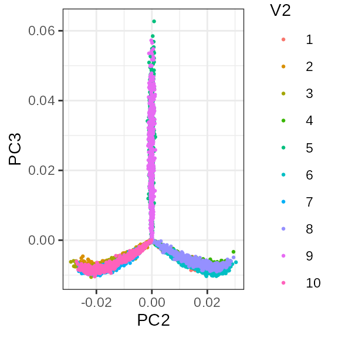

motivation_ASAP.RmdLet’s generate some single cell data by a Poisson-Gamma model for illustration:
\[Y_{ij} \sim \operatorname{Poisson}(\mu_{it} \rho_{j})\]
where
\(\mu_{it}\): expression pattern for a gene \(i\) within a cell type \(t\)
\(\rho_{j}\): sampling depth for a cell \(j\)
library(asapR)
mtx.data <- fileset.list("temp")
mtx.data$indv <- "temp.indv.gz"
if(!all(file.exists(unlist(mtx.data)))){
ntypes <- 3
nind <- 10
ngenes <- 1500
ncells <- 5000
.rnorm <- function(d1,d2) matrix(rnorm(d1*d2), d1, d2)
uu <- .rnorm(ngenes, ntypes)
vv <- apply(.rnorm(ntypes, nind), 2,
function(x) {
k <- which.max(x)
x <- x*0
x[k] <- 1
return(x)
})
mu <- exp(uu %*% vv + .rnorm(nrow(uu), ncol(vv)) * .5)
rho <- rgamma(ncells, 1, 1)
mtx.data <- mmutil_simulate_poisson(mu, rho, "temp")
}Since this data set is small enough, we can read them all in the memory and conduct some exploratory analysis. However, it may not be so for a large single-cell data set which may contain tens of thousands of features over millions of cells.
Y <- read.mtx.dense(mtx.data$mtx)We get counting data like this:
Y[1:5, 1:5]## [,1] [,2] [,3] [,4] [,5]
## [1,] 0 5 2 7 3
## [2,] 0 0 0 0 0
## [3,] 1 6 2 10 0
## [4,] 0 0 0 0 0
## [5,] 0 0 0 0 2We can estimate top PCs to figure out some latent structures
##
## Attaching package: 'dplyr'## The following objects are masked from 'package:stats':
##
## filter, lag## The following objects are masked from 'package:base':
##
## intersect, setdiff, setequal, union
theme_set(theme_bw())
cells <- read.table(mtx.data$col)
annot <- read.table(mtx.data$indv, header = FALSE)
.svd <- svd(log(Y + 1), 3, 3) # gene x factor, cell x factor
colnames(.svd$v) <- paste0("PC", 1:ncol(.svd$v)) # cell x factor## Joining, by = "V1"
ggplot(.df, aes(PC2, PC3, color=`V2`)) +
geom_point(size=.5)
mtx.index <- mmutil_read_index(mtx.data$idx)
.pb <- asap_random_bulk_data(mtx_file = mtx.data$mtx,
memory_location = mtx.index,
num_factors = 5,
verbose = TRUE,
NUM_THREADS = 8,
BLOCK_SIZE = 100)